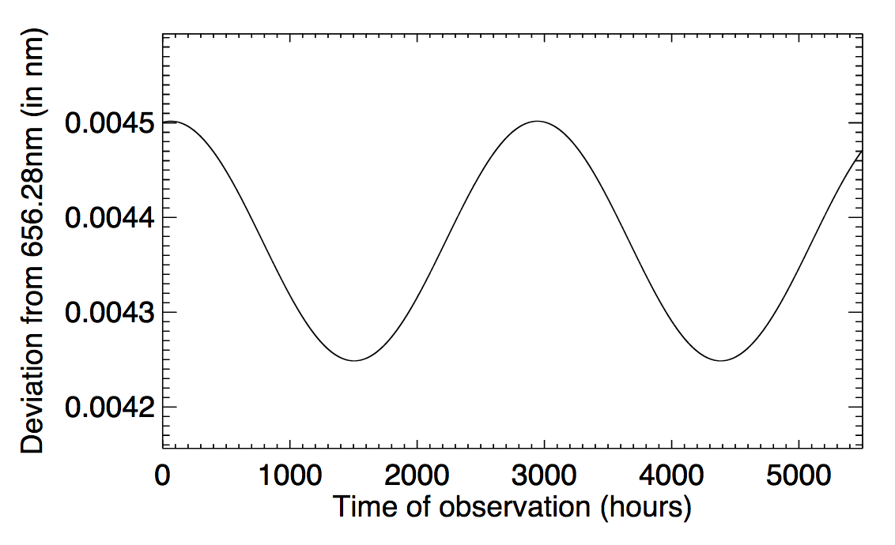

Forrige side🙂 🙁Radiell-hastighetsmetoden
Det er viktig at du gjør denne øvelsen:

Ta et papir, tegn akser og bruk figuren samt Dopplerformelen til å tegn hastighetskurven til stjerna som funksjon av tiden. Altså tid på x-aksen og hastighetskomponent vr på y-aksen. Forresten hvorfor kun hastighetskomponenten vr? Tenk før du trykker her
Dette er viktig: Dopplereffekten oppstår kun fra radialkomponenten (komponenten langs synsretningen). Vi må derfor presisere Dopplerformelen: $$\frac{\Delta\lambda}{\lambda}=\frac{% \mathpalette\@mathcircled{v_r}% }{c}$$ der vr er radialkomponenten, hastighetskomponenten rett mot/fra observatøren. Tangensialhastigheten (hastighet vinkelrett på synsretningen til observatøren) bidrar ikke til Dopplereffekt. Da er alt klart til å tegne hastighetsplottet for vr. Ikke gå videre før du har et omtrentlig plott! Neste side